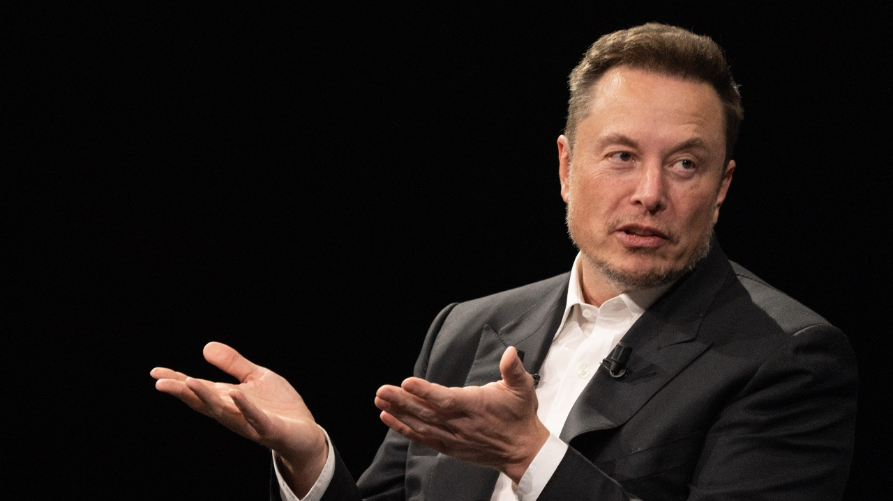

History
TechCon began in 2010 as a small gathering of tech enthusiasts and industry experts looking to share knowledge and insights into the rapidly evolving world of technology. Originally focused on software development, TechCon quickly expanded to cover a wide range of topics, including artificial intelligence, cybersecurity, and the Internet of Things (IoT).
Over the years, TechCon has grown into one of the largest annual technology conferences in the world, attracting thousands of attendees from all sectors of the tech industry. Each year, the conference showcases groundbreaking innovations, offers hands-on workshops, and features keynotes from some of the brightest minds in tech.
Mission
TechCon's mission is to inspire, connect, and empower technology professionals from all backgrounds. The conference aims to foster collaboration and knowledge-sharing among industry leaders, innovators, and newcomers, promoting advancements in technology that drive societal progress. Through keynote sessions, workshops, and networking events, TechCon encourages participants to push the boundaries of what is possible and solve real-world challenges with innovative tech solutions.
TechCon's guiding principles include:
- Innovation: Driving the discovery and adoption of cutting-edge technologies.
- Collaboration:Creating opportunities for cross-disciplinary partnerships.
- Inclusion:Ensuring a diverse range of voices and perspectives are represented.
Past Speakers
Elon Musk
CEO of Tesla and SpaceX, Elon Musk delivered a keynote speech at TechCon 2015 where he discussed the future of autonomous vehicles and space exploration. His contributions to sustainable energy and space travel have left a significant impact on both the automotive and aerospace industries.

Sheryl Sandberg
As COO of Facebook (now Meta), Sheryl Sandberg was a featured speaker at TechCon 2017, where she discussed leadership in tech and the role of women in the technology sector. Sandberg’s work has been pivotal in shaping tech company culture and promoting gender diversity in leadership positions.